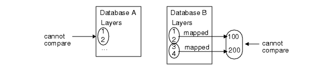
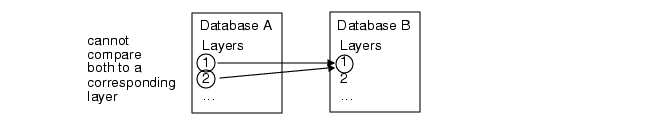

FastXOR Layer Mapping and Comparison
If you do not use a rule file described in the preceding paragraph, you may have Layer Map statements in your rule file. FastXOR handles the majority of layer mapping and comparison scenarios in the way you would expect.
For the following discussion, we define the terms simple layer, layer group, and member layer.
A simple layer is a single drawn layer in a layout database. It may or may not have a datatype.
A layer group is formed when multiple simple layers are mapped to a single layer. Here, layer 100 is a layer group formed from layers 1 and 2:
LAYER MAP > 0 < 3 DATATYPE 0 100A member layer is a simple layer that is a member of a layer group.
From the preceding Layer Map statement, Calibre layer 100 is a layer group composed of member layers 1.0 and 2.0.
The following are unsupported layer comparison configurations:
Comparison of two layers or layer groups from the same database — Suppose that layers 1 and 2 are both from the same layout database. These layers cannot be compared to each other. This applies to both simple layers and layer groups.
Comparison of member layers from different layer groups — Suppose that layers 1 and 2 are mapped to layer 100 in database A. Suppose that layers 1 and 2 are mapped to layer 200 in database B. You may compare layer 100 to layer 200 (corresponding layer groups). However, the member layers of layer groups 100 and 200 cannot be compared.

Comparison of group — Suppose layers 1 and 2 are mapped to layer 100 in database A. Layer group 100 cannot be compared to multiple distinct layers in database B.
Comparison of group — Suppose you have layers 1 and 2 in database A. These layers cannot both be compared to layer 1 or to layer 2 in database B.

The layer mapping behavior described previously can be disabled in a calibre -fx run by setting this environment variable:
CALIBRE_FX_DISABLE OPS=1
This causes only matching layers to be compared.